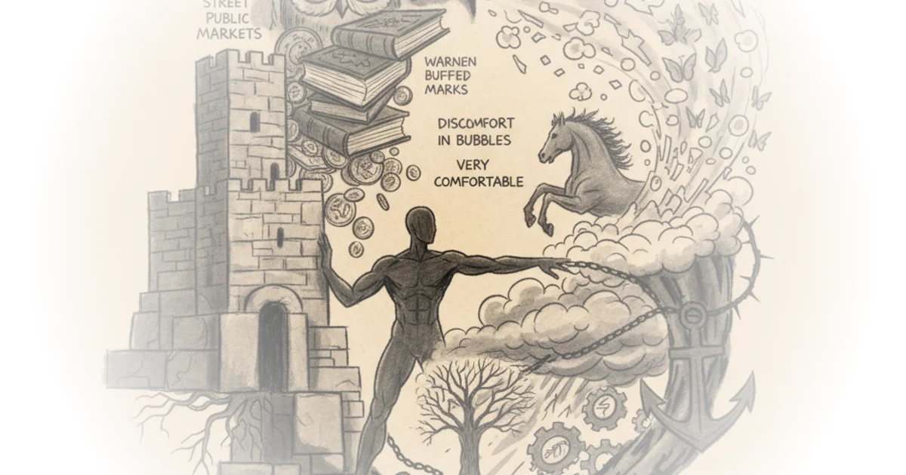

In a rare moment of unvarnished honesty, a legendary venture capitalist admits that his firm's greatest failure wasn't a bad bet, but a missed one: Google. Rick Rubin's interview with Bill Gurley strips away the glossy mythology of Silicon Valley to reveal a profession defined less by genius foresight and more by the dangerous trap of pattern recognition. For busy investors and founders alike, this is a masterclass in why the very experience that makes you successful can also blind you to the next massive opportunity.
The Illusion of the Independent Analyst
Gurley begins by dismantling the romanticized view of financial analysis, revealing a profession often reduced to regurgitating corporate press releases. He notes that while the "craftsman view" of an analyst involves using math to determine true value, the reality is starkly different. "Most analysts are being handfed the prediction from the company itself and they're just regurgitating it," Gurley states, estimating that this lack of independent thought accounts for "80 or 90%" of the industry. This is a damning indictment of a system where the sell-side analysts, who work for banks selling stocks, have lost their independence following regulatory changes after the dot-com bubble.

The core of Gurley's argument is that true value comes from discomfort. He explains that he is "more uncomfortable in bubbles than dark days," because in a bubble, the rules of winning are inverted. "The way you win is by being more careless which reinforces the whole thing and it gets uncomfortable," he observes. This framing is powerful because it reframes risk not as a mathematical probability, but as a psychological state. It suggests that the most dangerous time for an investor is not when the market crashes, but when everyone else is cheering.
Critics might argue that this view ignores the necessity of optimism in driving innovation; without the "carelessness" of a bubble, capital might never flow to risky, unproven technologies. However, Gurley's point stands: the mechanism that fuels growth often contains the seeds of its own destruction.
The biggest error that a venture capitalist can make is to miss an opportunity that's really big because you can only lose one time. It's asymmetric, but if something goes to the moon, you missed out on that opportunity and you have to orient yourself that way.
The Trap of Pattern Recognition
The conversation shifts to the specific mechanics of venture capital, where Gurley identifies "collaborative pattern recognition" as the number one skill set for a successful investor. Yet, he immediately pivots to how this same skill can be fatal. He recounts the story of Benchmark Capital passing on Google because the founders, Larry Page and Sergey Brin, were PhD students who wanted to be co-CEOs—a pattern Gurley's firm flagged as a red flag. "There were mental models that were telling you no," he admits. While other firms like Sequoia and Kleiner Perkins saw the potential, Gurley's reliance on historical patterns caused them to miss the biggest tech IPO in history.
This admission is the emotional core of the piece. It humanizes the titans of industry, showing that their decisions are often constrained by the very frameworks they built to succeed. Gurley explains that the venture capital business is "as much a hustle business as it is anything," and the pressure to maintain performance can force partners to stay in a game they no longer enjoy or are equipped to play.
The Decision to Step Away
Gurley draws a parallel between his decision to leave Benchmark and the career of comedian Jerry Seinfeld, referencing Steve Martin's book Born Standing Up. He describes watching Seinfeld quit comedy at the height of his fame because he felt he had "gotten all I need to get out of it." Similarly, Gurley realized he "probably didn't have that gear anymore" to sustain the relentless pace required by the equal partnership model at Benchmark. "I think I've gotten all I need to get out of it," he says, noting that the "peer pressure" in an equal partnership is healthy but demanding.
The interview also touches on the current state of the market, where Gurley observes a herd mentality around artificial intelligence. He notes that "venture capitalists have less than zero interest in any non AI deal," creating a scenario where founders are forced to shoehorn unique ideas into the AI narrative to get funded. "It creates more work than it does," Gurley says of the trend to make physical products "smart," comparing it to buying a car that needs a software update every few years.
All the VCs are using pattern recognition. So, that plays out. But I also think that there's a well-known history now of whether it was the first electronics revolution or the PC revolution or the internet revolution or the mobile like we've just seen these things happen over and over and over again.
Critics might note that Gurley's critique of the AI bubble risks sounding like a contrarian for the sake of it, especially when the transformative potential of the technology is still being realized. Yet, his warning about founders distorting their products to fit a trend is a timeless lesson in maintaining strategic focus.
Bottom Line
Rick Rubin's interview with Bill Gurley succeeds because it prioritizes vulnerability over victory lap, exposing the cognitive biases that even the smartest investors cannot escape. The strongest part of the argument is the admission that pattern recognition, the bedrock of venture success, is also the primary cause of catastrophic missed opportunities. The biggest vulnerability lies in the difficulty of applying this wisdom in real-time; knowing you are trapped in a mental model is far easier than breaking free from it. Readers should watch for how Gurley's philosophy on "stepping away" influences the next generation of fund managers who are currently drowning in the AI hype cycle.